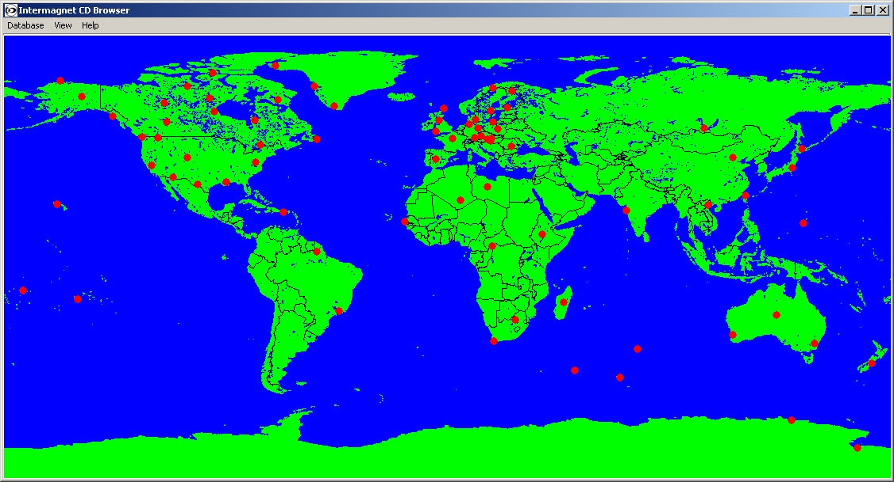
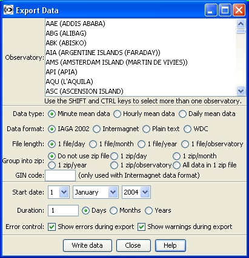

World Map Window
The window that you see when the program starts shows a view of the World. The observatories that the program has found in its database(s) are shown as red dots on the world map. If you move your mouse over an observatory its name will be displayed. If you click on an observatory using the left mouse button then a popup-menu will appear with a list of data that you can view. If you use the right mouse button you will get the same menu, but in a permanent window that will not close when you select an item from the menu.
The World Map window also holds the programs menu bar.
The World Map window is always present while the software is running. If you
close this window, the program will exit.
The Explorer window gives you an alternative view of data on a CD. The
view is similar to the INTERMAGNET archive format directory structure.
To view an object in the Explorer window, double click the object. For example,
to plot data from an observatory using the Explorer window, expand the tree
until the observatory is listed, expand the observatory, select and expand the
data file that you want to view then double click the 'Data Plot' icon.
The Explorer window also shows you which databases the program is using. For
more information about databases see the Databases
page.
The Export window allows you to create data files in IAGA 2002 and other data
formats from the INTERMAGNET archive data (the formats are described
here).
The window has been designed so that you can convert as much
data as you want with the minimum of work. The window displays a list of
observatories - you can select more than one observatory by using the SHIFT
key along with the mouse (to select a block of observatories) or the CTRL
key (to add/remove individual observatories from the selection). You can
also select the start date and duration for the data that you want - if
the file format that you select extends outside the start date or duration
(for example WDC minute data files start at the beginning of a month and
extend for a month) the start date and duration will be automatically adjusted
so that you get more data than you requested (you will never get less
data).
The 'File length' option controls how much data will be put into a
data file. If (for example) you select a duration of 1 year and a
file length of '1 file/month', then the data will be put into 12
files, each of one month duration. Each time you select a new
data type or format the file length will be set to the default
length for that type/format.
The 'Group into zip' option allows you to put your data files
into a zip file. The options work as follows:
Explorer Window

Export Window
